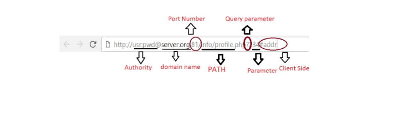

Hypertext Transfer Protocol
History
is a protocol in exchanging
or transferring hypertext on the World Wide Web.A protocol is sent over TCP, or over
a TLS-encrypted TCP connection,though any reliable transport protocol.
HTTP is widely used to access resources (hypertext/multimedia on the World Wide Web and for fetching of
resources, such as HTML documents.It is the foundation of data communication for the World Wide Web.
develop HTTP at CERN in Conseill
European on 1989 and jointly adopted by the W3C (World Wide Web Consortium) and
the standard development of it was coordinated by the IETF (Internet Engineering Task Force).
HTTP Four Versions:
HTTP 0.9
This is the first initial version of HTTP .It has a simple client-server,
request-response, telnet-friendly protocol.The method supported of HTTP 0.9 is
GET only and its request nature is single-line.On this version there is no HTTP headers
(cannot transfer other content type files), No status/error codes, No URLs,
No versioning.The popular web servers (Apache, Nginx) still supports HTTP/0/9.
HTTP 1 RFC 1945
HTTP 1.0 version provides header fields including rich metadata about
both request and response (HTTP version number, status code, content type).
Unlike HTTP 0.9 that the response is limit only in hypertext,HTTP 1.0 version
response is not limited to hypertext (Content-Type header provided ability
to transmit files other than plain HTML files — e.g. scripts, stylesheets, media).
It supports GET , HEAD , POST method.
HTTP 1.1
RFC 2608, JANUARY 1997
RFC 2616 JUN 1999
RFC 7230 JUN 2014
HTTP 2
RFC 7540,MAY 2015
HTTP FUNDAMENTALS
The HTTP protocol is a request/response protocol based on the client/server based architecture where web browsers,
robots and search engines, etc. act like HTTP clients, and the Web server acts as a server.
- HTTP runs on the top of TCP(Transmission Protocol)/IP(Internet Protocol) using TCP port 80 by the default or TCP port 443 for HTTPS (HTTP over SSL/TLS).
- HTTP is text based; the basic unit of HTTP communication is the message.
- Basically,HTTP uses request-response protocol,that the client will sends an HTTP requests message to the server.
- HTTP is based on a client -server architecture
Servers: origin server,proxy server,gateways,tunnels
origin server - actual machine,where resource is located.
Proxy server - An intermediary program which acts as both a server and a client for
the purpose of making requests on behalf of other clients. Proxies are often used as
client-side portals through network firewalls and as helper applications for handling
requests via protocols not implemented by the user agent.
Server - An application program that accepts connections in order to service requests
by sending back responses.
Gateway - a gateway receives requests as if it were the origin server for the requested
resource; the requesting client may not be aware that it is communicating with a gateway.
Gateways are often used as server-side portals through network firewalls and as protocol
translators for access to resources stored on non-HTTP systems.
Tunnel - A tunnel is an intermediary program which is acting as a blind relay between two connections.
Client A.K.A
An application program that makes a connections for the purpose of sending requests.
The client which initiates a request (browsers, editors, spiders).
HTTP is a stateless communications protocol ,that servers do not keep in of
about clients in between requests(simple implementations).
HTTP provides a support for other functionalities such as:
- cache control
- content media type Multi purpose Internet Mail Extensions(MIME)
- language and character set specification
- content/transfer codings
- client-server protocol negotiations(http1-http2)
- request pipelining/multiplexing
- pipelining is the process where more than one request from the client.
- authentication/authorization(control over accessing credentials).
HTTP RESOURCE ADDRESSING
HTTP RESOURCE are identified using Uniform Resource Identifier’s (RFC 3986) or more specifically HTTP URLs.
An excerpt from Tim Berners-Lee, et. al. in rfc 3986: uniform resource identifier (uri): generic
syntax:A Uniform Resource Identifier (URI) is a compact sequence of characters that identifies
an abstract or physical resource.A URI can be further classified as a locator, a name, or both.
The term “Uniform Resource Locator” (URL) refers to the subset of URIs that, in addition to
identifying a resource, provide a means of locating the resource by describing its primary
access mechanism (e.g., its network “location”). (Difference Between URLs and URIs. (n.d.))
Scheme (http or https)
scheme indicates the addressing system.
*Hypertext Transfer Protocol (http)
*HTTP Secure is an adaptation of the Hypertext Transfer Protocol,it is the secure version of HTTP.
Authority (user:pwd)
user information
Host -domain name
Port - default 80
Path to resource
It refers to the document root(WAMP,UBUNTU) on the server and may refer to static or dynamic
Query
It starts in question mark (?)
Typically provided as key = value pairs with ampersand (&) separator between key value pairs
Fragment identifier

HTTP REQUEST METHODS
are methods used by clients to request some resources to the server. And every request has a corresponding response.
There are 8 standard methods in HTTP it includes the GET, HEAD, POST (from HTTP/1.0), PUT, DELETE, OPTIONS, TRACE and CONNECT method (from HTTP/1.1). And recently PATCH method were added and it was determined by RFC 5789.
GET - request data from a pa resource.
HEAD - similar as the GET method but the only difference is it only returns the HTTP headers or the metadata.
POST - performs submission of data to a particular resource to be processed.
PUT - create or replace something. It uploads a report of the specified URI.
DELETE - removes the target resource.
OPTIONS - recommends more choices that the server supports.
TRACE - used for testing/diagnosing of the response or request chain.
CONNECT - establishes a tunnel to the destination origin master
PATCH - provides partial changes to a resource.
METHOD PROPERTIES
Safe Methods - read only semantics
(GET, HEAD, OPTION, TRACE)
Idempotent Methods - multiple identical request
(GET, HEAD, OPTION, TRACE, PUT, DELETE)
Cacheable Methods - response to method that allows to be stored with feature reuse.
(GET, HEAD, POST)
HTTP MESSAGE HEADER FIELDS
- General header: used by both client and server
- Request header: used only by clients-user agent (client message)
- Response header: used only by server (server message)
- Entity header: referred to an entity.
HTTP response status codes is an indication if a HTTP request has been processed successfully. HTTP response status codes are specified in section 10 of RFC 2616.
These are grouped in five classes it includes:
100 Continue
101 Switching Protocol
102 Processing (WebDAV)
200 OK
201 Created
202 Accepted
203 Non-Authoritative Information
204 No Content
205 Reset Content
206 Partial Content
207 Multi-Status (WebDAV)
208 Multi-Status (WebDAV)
226 IM Used (HTTP Delta encoding)
300 Multiple Choice
301 Moved Permanently
302 Found
303 See Other
304 Not Modified
305 Use Proxy
306 unused
307 Temporary Redirect
308 Permanent Redirect
400 Bad Request
401 Unauthorized
402 Payment Required
403 Forbidden
404 Not Found
405 Method Not Allowed
406 Not Acceptable
407 Proxy Authentication Required
408 Request Timeout
409 Conflict
410 Gone
411 Length Required
412 Precondition Failed
413 Payload Too Large
414 URI Too Long
415 Unsupported Media Type
416 Requested Range Not Satisfiable
417 Expectation Failed
418 I'm a teapot
421 Misdirected Request
422 Unprocessable Entity (WebDAV)
423 Locked (WebDAV)
424 Failed Dependency (WebDAV)
426 Upgrade Required
428 Precondition Required
429 Too Many Requests
431 Request Header Fields Too Large
451 Unavailable For Legal Reasons
500 Internal Server Error
501 Not Implemented
502 Bad Gateway
503 Service Unavailable
504 Gateway Timeout
505 HTTP Version Not Supported
506 Variant Also Negotiates
507 Insufficient Storage
508 Loop Detected (WebDAV)
510 Not Extended
511 Network Authentication Required